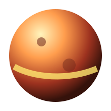

Why Start In The Past?
Python makes many things feel simple because it hides details that older or lower-level languages ask you to manage directly. C gives you sharper control over memory, compilation, and performance. Python gives you faster expression, readable syntax, and a huge standard library.
This planet is about seeing Python's strengths more clearly by comparing it with a language that makes different promises.
Things To Compare
- Compiled C programs versus interpreted Python scripts.
- Manual memory management versus automatic memory management.
- Speed of execution versus speed of writing and changing code.
- Small syntax examples: printing, loops, arrays, and functions.
Mini mission: Write the same tiny program in C and Python: ask for a name, print a greeting, then loop through a list of three favorite foods.